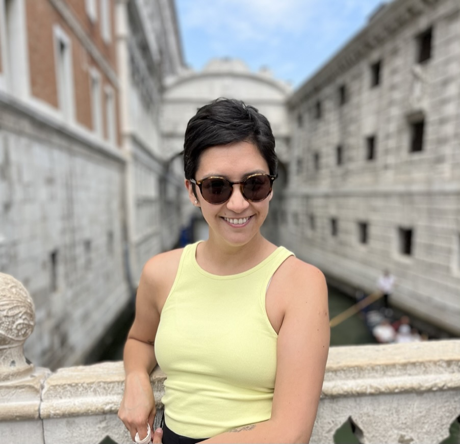

CURRÍCULUM VITAE
Belén Vásquez Silva

Resumen
Fonoaudióloga titulada de la Universidad de Chile.
Magister en Atención Temprana y Familia, Universitat de Barcelona.
Experiencia en evaluación, diagnóstico e intervención en trastornos
del habla, deglución,
lenguaje, audición y voz tanto en niños como en adultos. Más de 7
años de experiencia en
atención en el servicio público de salud, especializada en atención
temprana y acompañamiento
a las familias de niños con retraso o alteraciones del habla,
lenguaje y comunicación.
Datos personales
- Nombre: Belén Vásquez Silva
- Lugar de naciemiento: Santiago
- Fecha de nacimiento: 21 de agosto de 1989
Formación
- Universitat de Barcelona, España - Máster en Atención
Temprana y Familia, 2021- 2023.
- Sociedad Chilena de Pediatría - Diploma Seguimiento e
intervención temprana del recién nacido prematuro, 2020.
- Universidad de Chile - Diploma Metodología cuantitativa y
cualitativa aplicada a la investigación en Salud, 2019
- Universidad de Chile - Carrera de Fonoaudiología, 2008- 2014
Experiencia Laboral
- Fonoaudióloga y Encargada Chile crece contigo, Cesfam La
Junta; La Junta, Aysén — 2021-presente
- Fonoaudióloga, Hospital de Chaitén; Chaitén, Los Lagos —
2020-2021
- Fonoaudióloga, Cecosf Ayacara; Chaitén, Los Lagos — 2018-
2019
- Fonoaudióloga, DESAM I. Municipalidad de La Granja, Santiago
— 2015-2018
Portafolio de proyectos
Perfil en Linkedin